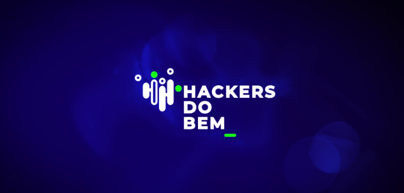

Hacker's do Bem (320 horas)
Período de Conclusão: 09/2024
Documento oficial assinado por autoridade competente.

Hacker's do Bem
Projeto elaborado por: Senai, RNP-Rede Brasileira para Educação e Pesquisa, Softex e o Ministério da Ciência, Tecnologia e Inovação.
A capacitação oferecida pelo curso foi de suma importância para o desenvolvimento de competências avançadas em segurança, tanto em aspectos técnicos quanto estratégicos.
O curso forneceu uma visão holística e prática, desde a identificação e mitigação de ameaças até a resposta e investigação de incidentes. Com essa formação, estou apto a atuar de forma proativa na defesa de sistemas e redes, contribuindo para a proteção do ambiente digital.
Veja as Certificações nas Imagens